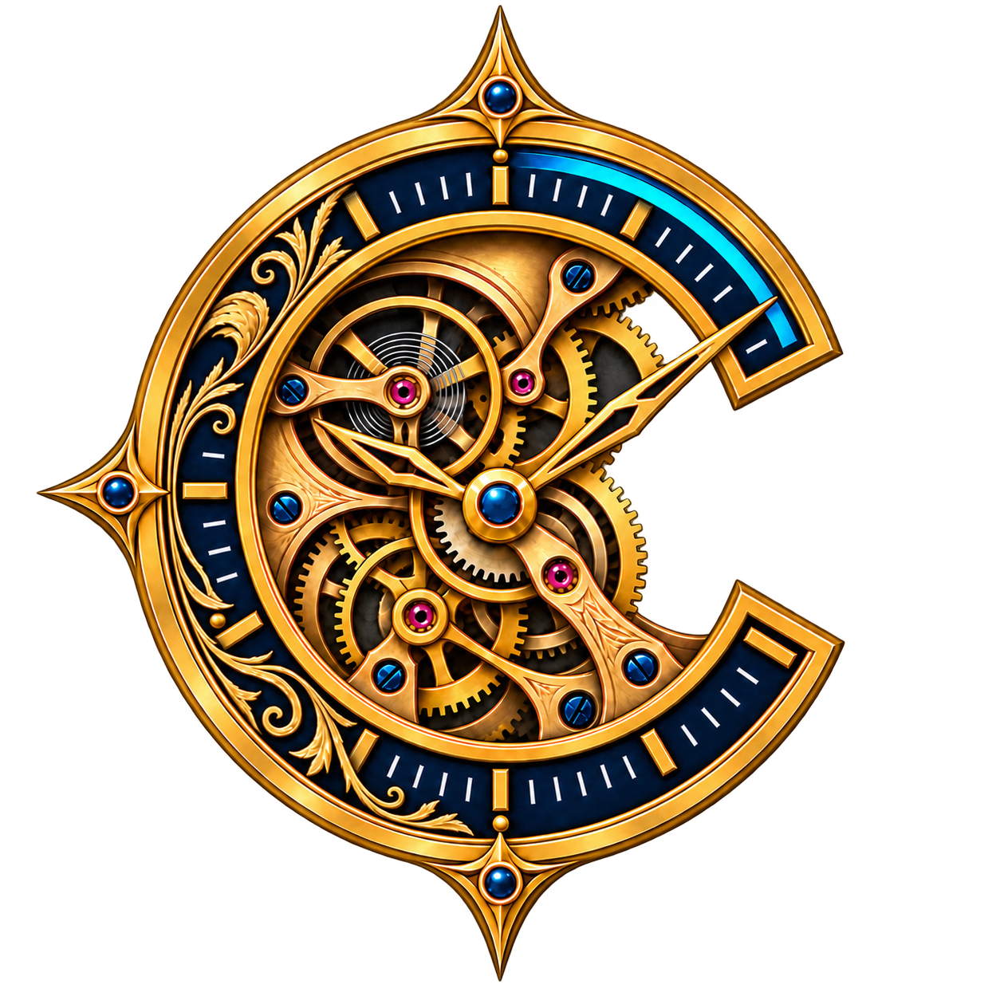

Desktop · Local-first
Chrono Project
Planejamento de projetos com precisão e dados sob seu controle.
Project planning built for Windows and offline work.
TabelaKanbanGanttCaminho crítico

Desktop · Local-first
Planejamento de projetos com precisão e dados sob seu controle.
Project planning built for Windows and offline work.